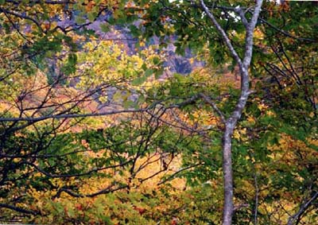

仙人大滝への登山道をちょっと入ったところで撮影。
春に仙人大滝へ行った帰り、ブナの新緑と木漏れ日を楽しみながら、ウオークマンでオール
ディズを聞きながら降りてきた。沢を横切る時、昔は離れた飛び石をぴよんぴよん飛び歩い
たがなんか飛び跳ねる元気が出なかった。そこで、ちょっと濡れた岩に乗ったら、つるりと滑る、
おっととと左足を出したらもっと滑った。ヤバイと両手を突いたらその四つん這いのまま流さ
れ数ｍ流れて岩を落ち、ちょっとした淵にドボン。結構深くて全身冷たい雪解け水に浸かって
しまった。ヤマメが「あらら、おばかさん」と言って逃げていった気がする。カメラもウオー
クマンも水浸し。幸い、３５年前に教えられた通りにウールのシャツだったのでそんなに寒い思い
もせず、車のヒターを効かせて帰ってきた思い出の地。
宮城県 笹谷
